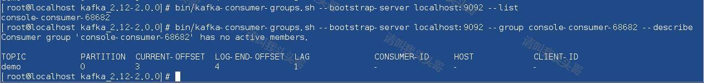
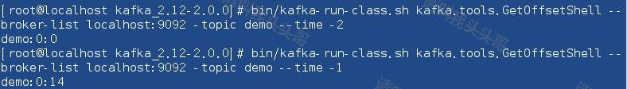
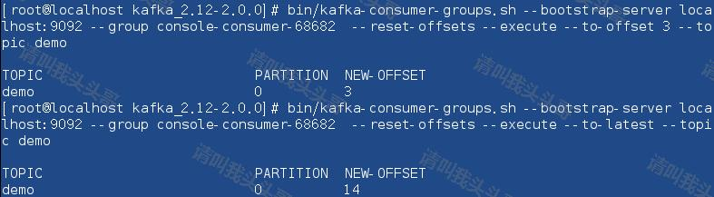
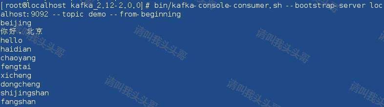
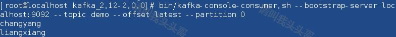

在上一篇文章《Linux安装Kafka》中，已经介绍了如何在Linux安装Kafka，以及Kafka的启动/关闭和创建发话题并产生消息和消费消息。这篇文章就介绍介绍Kafka的那些常用的命令。
关于Kafka的启停/创建话题/消息的产生和消费等命令在上一篇文章《Linux安装Kafka》中已经指出，这里就不说了。就说说其他常用命令。
有时候我们需要关心消费者应用的状态，一般消费者应用会自己通过日志获知当前消费到了哪个topic的哪个partition的哪个offset，但当消费者出问题之后，或者出于监控的原因，我们需要知道消费者的状态和详情，那么需要借助kafka提供的相关命令。
命令格式：
bin/kafka-consumer-groups.sh --bootstrap-server BORKER_HOST1:PORT1,BORKER_HSOT2:PORT2 --list
bin/kafka-consumer-groups.sh --bootstrap-server BORKER_HOST1:PORT1,BORKER_HSOT2:PORT2 --group GROUP_NAME --describe
Tips:
- BROKER_HOST是kafka server的ip地址，PORT是server的监听端口。多个host port之间用逗号隔开
- 第一条命令是获取group列表，一般而言，应用是知道消费者group的，通常在应用的配置里，如果已知，该步骤可以省略
- 第二条命令是查看具体的消费者group的详情信息，需要给出group的名称
示例：
bin/kafka-consumer-groups.sh --bootstrap-server localhost:9092 --list
bin/kafka-consumer-groups.sh --bootstrap-server localhost:9092 --group console-consumer-68682 --describe
效果图：

用下面命令可以查询到topic:demo broker:localhost:9092的offset的最小值：
bin/kafka-run-class.sh kafka.tools.GetOffsetShell --broker-list localhost:9092 -topic demo --time -2
查询offset的最大值：
bin/kafka-run-class.sh kafka.tools.GetOffsetShell --broker-list localhost:9092 -topic demo --time -1
效果图：

有些场景可能希望修改消费者消费到的offset位置，以达到重新消费，或者跳过一部分消息的目的，这时候重置offset的工具就非常实用。
命令格式：
bin/kafka-consumer-groups.sh --bootstrap-server BORKER_HOST1:PORT1,BORKER_HSOT2:PORT2 --group GROUP_NAME --reset-offsets --execute --to-offset NEW_OFFSET --topic TOPIC_NAME
bin/kafka-consumer-groups.sh --bootstrap-server BORKER_HOST1:PORT1,BORKER_HSOT2:PORT2 --group GROUP_NAME --reset-offsets --execute --to-earliest/--to-latest --topic TOPIC_NAME
Tips:
- BROKER_HOST是kafka server的ip地址，PORT是server的监听端口。多个host port之间用逗号隔开
- 第一条命令是将指定GROUP_NAME和topic的offset修改到NEW_OFFSET的位置，重启消费者后，消费中将从指定的offset处消费。注意这里只能NEW_OFFSET只能设置一个值，也就是说，所有的分区都将使用这个值，如果分区消息负载不均衡，需要考虑是否适用。
- 第二条命令是将指定GROUP_NAME和topic的offset修改到earliest或者latest位置，使得消费者从头或者从尾部消费。
示例：
bin/kafka-consumer-groups.sh --bootstrap-server localhost:9092 --group console-consumer-68682 --reset-offsets --execute --to-offset 3 --topic demo
bin/kafka-consumer-groups.sh --bootstrap-server localhost:9092 --group console-consumer-68682 --reset-offsets --execute --to-latest --topic demo
效果图：

可以通过直接更换消费者group id的方式，配合消费者默认的消费策略，可以达到类似的效果，反而更加简单、高效和安全。
当broker出现宕机，恢复之后，我们可以看下topic的leader是否负载均衡。因为kafka的所有读写消息的请求，都是发送到partition leader上的，因此在生产环境，负载均衡显得尤其重要。
命令格式：
bin/kafka-topics.sh --zookeeper ZOOKEEPER_HOST1:PORT1,ZOOKEEPER_HOST2:PORT2 --describe --topic TOPIC_NAME
Tips:
- ZOOKEEPER_HOST是kafka所使用的zookeeper的ip地址，PORT是zookeeper监听的端口。多个host port之间用逗号隔开
- 类似的，zookeeper集群不需要全部列上，给出一个可用的zk地址和端口即可
示例：
bin/kafka-topics.sh --zookeeper localhost:2181 --describe --topic demo
效果图：
如果发现以下现象说明kafka异常：
从头开始消费：
bin/kafka-console-consumer.sh --bootstrap-server localhost:9092 --topic demo --from-beginning
效果图：

从尾部开始：
bin/kafka-console-consumer.sh --bootstrap-server localhost:9092 --topic demo --offset latest --partition 0
效果图：

指定分区：
bin/kafka-console-consumer.sh --bootstrap-server localhost:9092 --topic demo --offset latest --partition 0
取指定个数：
bin/kafka-console-consumer.sh --bootstrap-server localhost:9092 --topic demo --offset latest --partition 0 --max-messages 2
如示例部分，取2个消息，取完自动结束回话。
测试使用Kafka自带的测试脚本，通过命令对Kafka发起写入MQ消息和Kafka消费MQ消息的请求。模拟不同数量级的MQ消息写入和MQ消息消费场景，根据Kafka的处理结果，评估Kafka是否满足处理亿级以上的消息的能力。
命令格式：
bin/kafka-producer-perf-test.sh --topic demo --num-records 100 --record-size 1 --throughput 100 --producer-props bootstrap.servers=localhost:9092
示例：
| 测试项 | 压测消息数（单位:W） | 测试命令 |
| 写入MQ消息 | 10 |
|
| 100 |
|
|
| 1000 |
|
|
| 消费MQ消息 | 10 |
|
| 100 |
|
|
| 1000 |
|
本文中部分内容翻译或借鉴于以下学习资料，特别鸣谢：
作 者：请叫我头头哥
出 处：http://www.cnblogs.com/toutou/
关于作者：专注于基础平台的项目开发。如有问题或建议，请多多赐教！
版权声明：本文版权归作者和博客园共有，欢迎转载，但未经作者同意必须保留此段声明，且在文章页面明显位置给出原文链接。
特此声明：所有评论和私信都会在第一时间回复。也欢迎园子的大大们指正错误，共同进步。或者直接私信我
声援博主：如果您觉得文章对您有帮助，可以点击文章右下角【推荐】一下。您的鼓励是作者坚持原创和持续写作的最大动力！